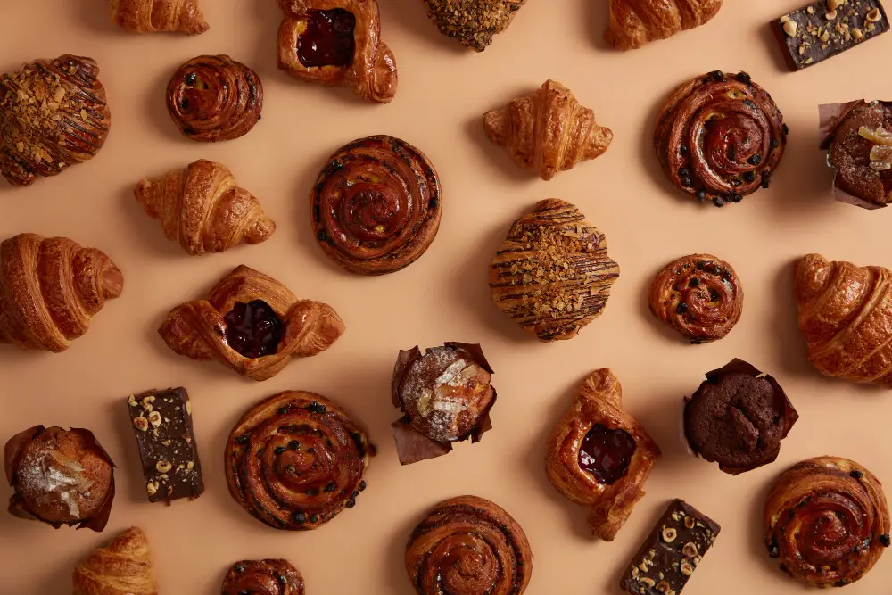
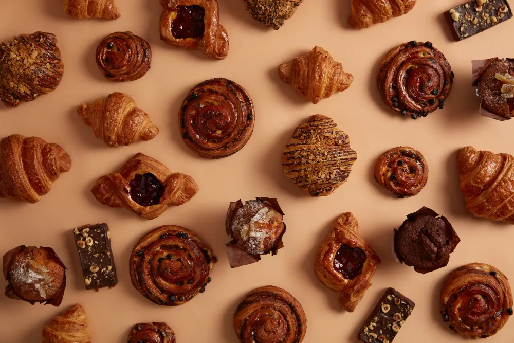

Bringing Art and Mental Health Together Online
A responsive, visually engaging website built in Webflow, capturing Therapicasso’s mission—using creativity to support mental health, especially among children.
WebflowRedesignClient Communication
The Bottom Line
Therapicasso is a nonprofit that uses art therapy to support kids’ mental health. To make it easier for parents, donors, and volunteers to connect with the organization, I was brought on to redesign their website and implement additional features such as a blog and events calendar.
My contribution: Designer & Webflow Developer (Design, CMS Implementation)
The Goal: Creating a Digital Canvas for Mental Health
I sought to create a site that better reflected their mission, with intuitive content structure, optimized performance, and a look that felt both caring and trustworthy.
The Process: From Concept to Clicks
Step 1 – Research & Ideation
I explored Therapicasso’s themes—art, youth, healing—and built moodboards around calmness and creativity. Based on the logo and social media branding, the final direction used soft greens, playful yet professional fonts, and handmade textures that echoed the feel of art therapy.


Step 2 – Iterative Design & Client Collaboration
I mocked up early layouts in Photoshop and sent frequent updates to the founder. We went through several iterations of the “Meet the Team” section and other components until it felt right. One big learning moment: when a design felt “off,” I found that offering 2–3 quick alternatives helped the client articulate what they really wanted.

Step 3 – Webflow Dev & CMS Setup
I built the site in Webflow to allow fast development and easy client edits. I used logical class naming, clean structure, and made sure the client could update everything—from team bios to blog posts.
I also:
- optimized images for faster load
- ensured all interactive elements had hover states or cursor changes (so users never had to guess what was clickable)
- built accessible interactions with proper alt text and focus indicators
- scored high on Lighthouse (92 Accessibility & SEO, 100 Best Practices)

Final Outcomes
- Fixed mobile issues → Fully responsive layouts across breakpoints
- Added about, action, updates, and events pages → Easier for visitors to find information
- Client empowerment → Webflow CMS lets them update everything solo


Final Reflections
This project taught me how to work with clients by iterating through designs, along with ensuring their vision gets executed despite Webflow’s constraints. While it wasn’t the most technically complex project, I focused on usability, clarity, and polish—things that turn a good site into one people actually want to use. It made me excited to tackle bigger frontend challenges next, whether in Webflow or hands-on with code.


 
